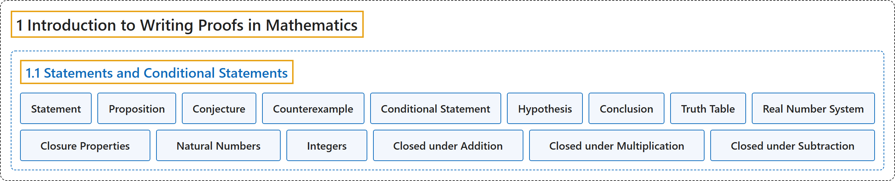

1.1 Statements and Conditional Statements
Classification

Glossary
| Term | Definition | 中文翻译 | Source |
|---|---|---|---|
| 1 Introduction to Writing Proofs in Mathematics 数学证明写作入门 |
(No definition) | （无定义） | Sundstrom, 2022, chapter 1 |
| 1.1 Statements and Conditional Statements 陈述与条件陈述 |
(No definition) | （无定义） | Sundstrom, 2022, section 1.1 |
| Statement 陈述 |
"In mathematics, a statement is a declarative sentence that must have a definite truth value, either true or false but not both." | 在数学中，陈述是必须有确定真值的陈述句，要么真要么假，不能两者都是。 | Sundstrom, 2022, section 1.1 |
| Proposition 命题 |
"A statement is sometimes called a proposition." | 陈述有时也称为命题。 | Sundstrom, 2022, section 1.1 |
| Conjecture 猜想 |
"When we make a guess in mathematics, we usually call it a conjecture." | 当我们在数学中做出猜测时，通常称它为猜想。 | Sundstrom, 2022, section 1.1 |
| Counterexample 反例 |
"In this way, we can gather information that provides evidence that a statement is true, or we might find an example that shows the statement is false. This type of example is called a counterexample." | 这样我们可以收集证据说明某个陈述为真，也可能找到说明该陈述为假的例子。这类例子称为反例。 | Sundstrom, 2022, section 1.1 |
| Conditional Statement 条件陈述 |
"A conditional statement is a statement that can be written in the form “If \(P\) then \(Q\text{,}\)” where \(P\) and \(Q\) are sentences." | 条件陈述是能写成“如果 \(P\) 那么 \(Q\)”形式的陈述，其中 \(P\) 和 \(Q\) 是语句。 | Sundstrom, 2022, section 1.1 |
| Hypothesis 假设 |
"For this conditional statement, \(P\) is called the hypothesis and \(Q\) is called the conclusion." | 对这个条件陈述，\(P\) 称为假设，\(Q\) 称为结论。 | Sundstrom, 2022, section 1.1 |
| Conclusion 结论 |
"For this conditional statement, \(P\) is called the hypothesis and \(Q\) is called the conclusion." | 对这个条件陈述，\(P\) 称为假设，\(Q\) 称为结论。 | Sundstrom, 2022, section 1.1 |
| Truth Table 真值表 |
"This is summarized in Table 1.3, which is called a truth table for the conditional statement \(P \to Q\text{.}\)" | 这一点总结在表 1.3 中，它称为条件陈述 \(P \to Q\) 的真值表。 | Sundstrom, 2022, section 1.1 |
| Real Number System 实数系 |
"The primary number system used in algebra and calculus is the real number system. We usually use the symbol \(\mathbb{R}\) to stand for the set of all real numbers. The real numbers consist of the rational numbers and the irrational numbers." | 代数和微积分中使用的主要数系是实数系。我们通常用符号 \(\mathbb{R}\) 表示全体实数的集合。实数由有理数和无理数组成。 | Sundstrom, 2022, section 1.1 |
| Closure Properties 封闭性 |
"Notice that these so-called closure properties are defined in terms of conditional statements." | 注意，这些所谓的封闭性是用条件陈述来定义的。 | Sundstrom, 2022, section 1.1 |
| Natural Numbers 自然数 |
"The natural numbers consist of the positive whole numbers such as 1, 2, 3, 107, and 203." | 自然数由正整数组成，例如 1、2、3、107 和 203。 | Sundstrom, 2022, section 1.1 |
| Integers 整数 |
"The integers consist of zero, the natural numbers, and the negatives of the natural numbers." | 整数由零、自然数和自然数的相反数组成。 | Sundstrom, 2022, section 1.1 |
| Closed under Addition 对加法封闭 |
"Three of the basic properties of the integers are that the set \(\mathbb{Z}\) is closed under addition, the set \(\mathbb{Z}\) is closed under multiplication, and the set of integers is closed under subtraction. This means that If \(x\) and \(y\) are integers, then \(x + y\) is an integer;" | 整数的三个基本性质是：集合 \(\mathbb{Z}\) 对加法封闭，对乘法封闭，整数集对减法封闭。这意味着：如果 \(x\) 和 \(y\) 是整数，那么 \(x + y\) 是整数； | Sundstrom, 2022, section 1.1 |
| Closed under Multiplication 对乘法封闭 |
"Three of the basic properties of the integers are that the set \(\mathbb{Z}\) is closed under addition, the set \(\mathbb{Z}\) is closed under multiplication, and the set of integers is closed under subtraction. This means that If \(x\) and \(y\) are integers, then \(x + y\) is an integer; If \(x\) and \(y\) are integers, then \(x \cdot y\) is an integer;" | 整数的三个基本性质是：集合 \(\mathbb{Z}\) 对加法封闭，对乘法封闭，整数集对减法封闭。这意味着：如果 \(x\) 和 \(y\) 是整数，那么 \(x + y\) 是整数；如果 \(x\) 和 \(y\) 是整数，那么 \(x \cdot y\) 是整数； | Sundstrom, 2022, section 1.1 |
| Closed under Subtraction 对减法封闭 |
"Three of the basic properties of the integers are that the set \(\mathbb{Z}\) is closed under addition, the set \(\mathbb{Z}\) is closed under multiplication, and the set of integers is closed under subtraction. This means that If \(x\) and \(y\) are integers, then \(x + y\) is an integer; If \(x\) and \(y\) are integers, then \(x \cdot y\) is an integer; and If \(x\) and \(y\) are integers, then \(x - y\) is an integer." | 整数的三个基本性质是：集合 \(\mathbb{Z}\) 对加法封闭，对乘法封闭，整数集对减法封闭。这意味着：如果 \(x\) 和 \(y\) 是整数，那么 \(x + y\) 是整数；如果 \(x\) 和 \(y\) 是整数，那么 \(x \cdot y\) 是整数；如果 \(x\) 和 \(y\) 是整数，那么 \(x - y\) 是整数。 | Sundstrom, 2022, section 1.1 |
References
Sundstrom, T. (2022). Mathematical reasoning: Writing and proof (Version 2.1; PreTeXt edition by Grand Valley State University). Retrieved October 30, 2026, from https://gvsuoer.github.io/sundstrom-textbook/frontmatter.html